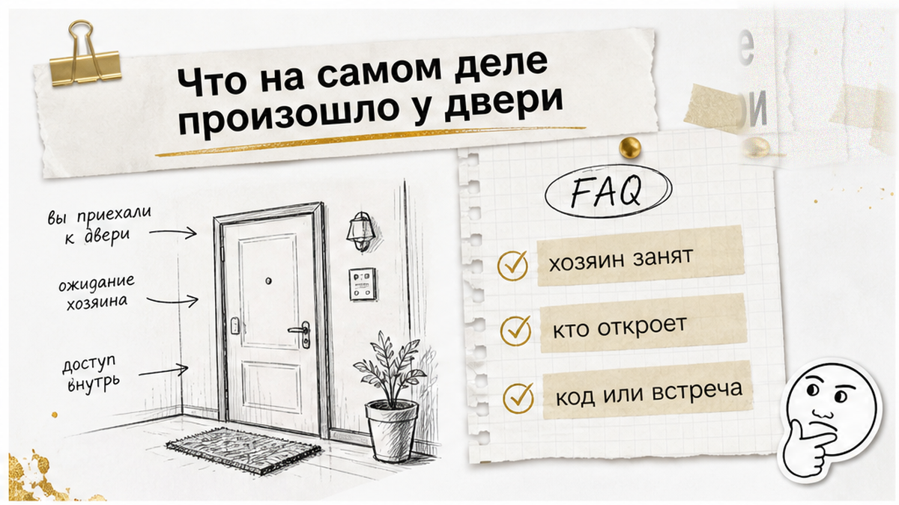
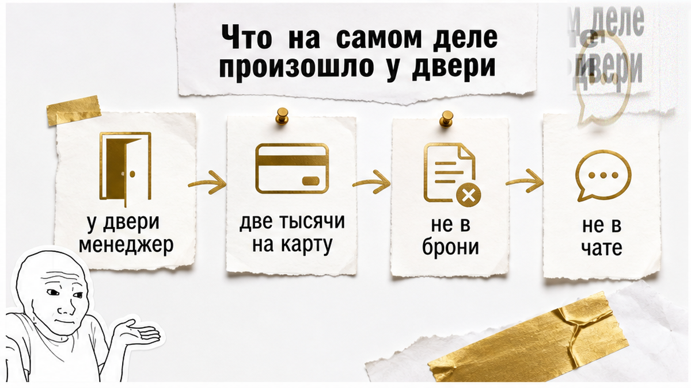
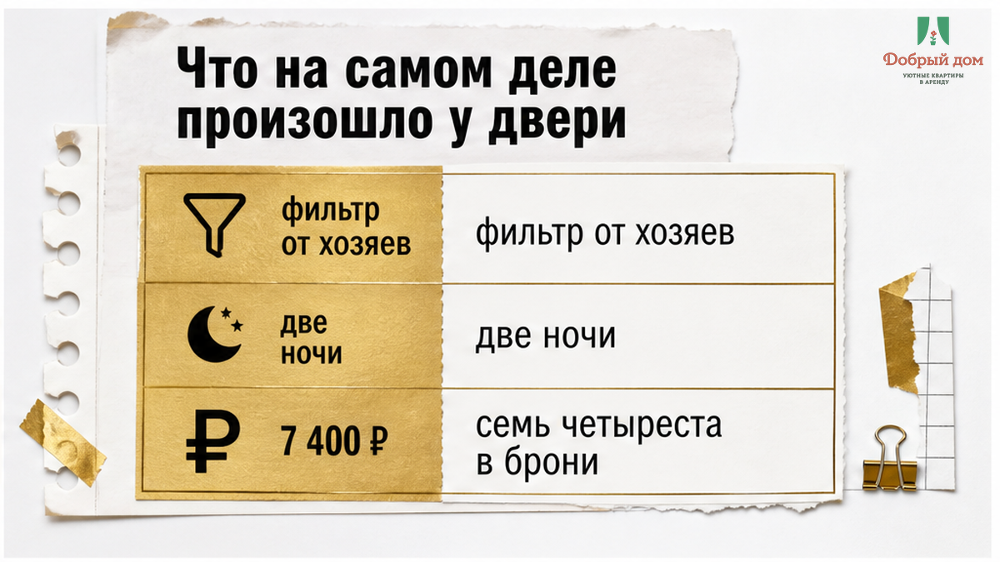
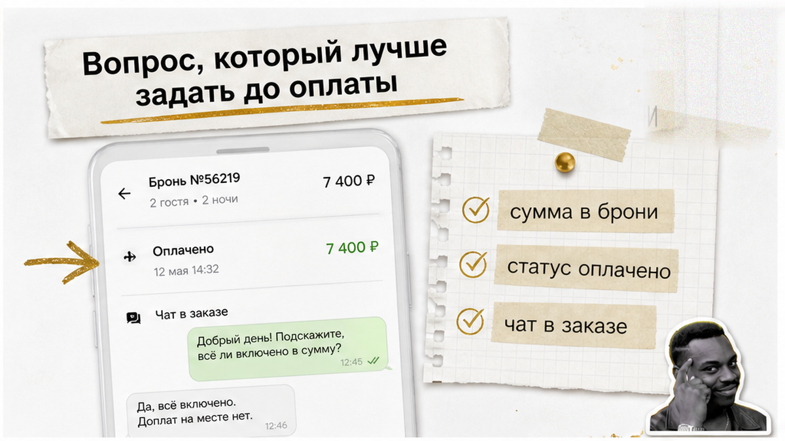
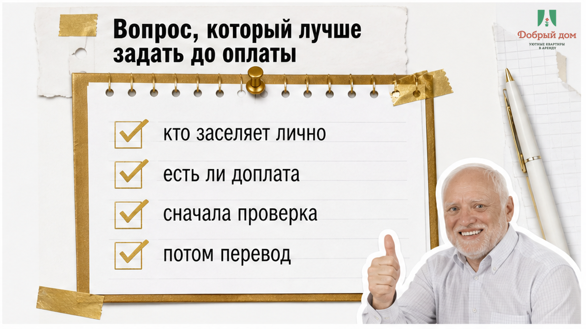
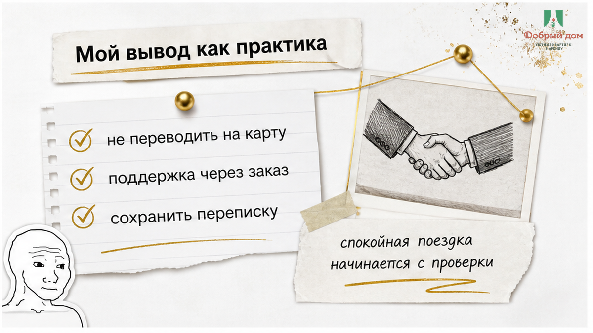
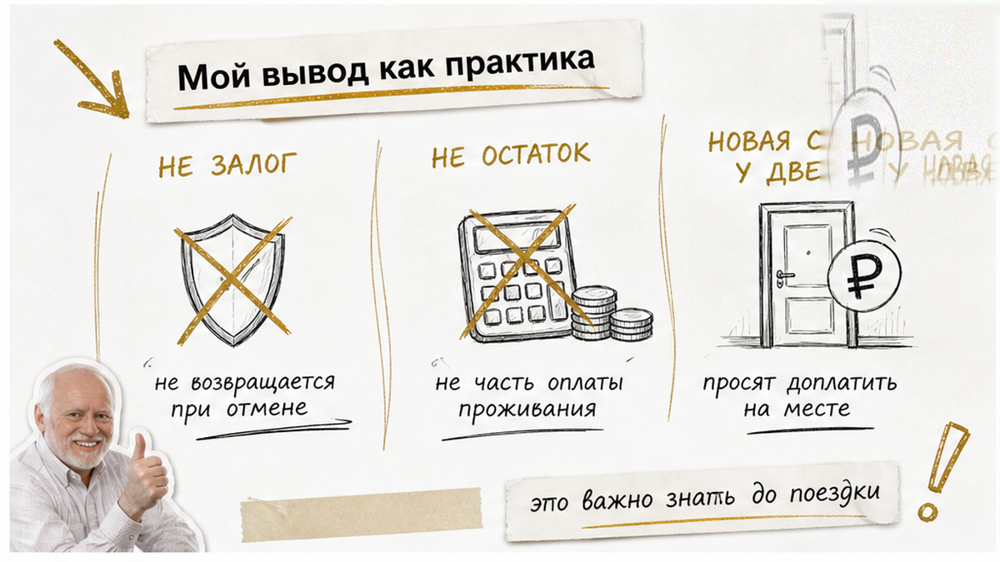

Человек искал квартиры посуточно тюмень без посредников, поставил в фильтре галочку «от хозяев» и забронировал две ночи. Через площадку ушло 7 400 ₽ — в брони была ровно эта сумма, без лишних строк. У двери его встретил незнакомый мужчина с планшетом: «Я менеджер, хозяин занят. За оформление ещё две тысячи рублей — переводом на карту». Гость открыл бронь в телефоне: ночи оплачены, а 2 000 ₽ нет ни в цене, ни в примечаниях, ни в переписке. Слова «менеджер» в карточке тоже не было.
Пауза длилась недолго. Потом прозвучало: «Но вы же уже приехали». Вот здесь и ломается иллюзия фильтра «от хозяев». Он сужает выдачу, но не обещает, что дверь откроет собственник. Хозяин может поручить заселение помощнику или отправить гостю код — это нормально. Ненормально другое: роль человека у порога заранее не названа, а новая обязательная сумма появляется после оплаты. Гостю предлагают на лестничной клетке устно дописать к уже подтверждённой брони ещё один платёж.
Я хост посуточной в Тюмени. Это «Добрый дом». Пишу об этом потому, что такие истории приходят ко мне в переписку — в Telegram и в MAX. Не потому, что любой менеджер у двери — мошенник. И не потому, что фильтр «от хозяев» бесполезен. Просто между «деньги ушли через площадку» и «гость получил ключ» иногда остаётся серая зона, куда кто-то пытается вписать любую сумму словами.



Сначала исчезла ясность с ролью. Гость не знает, кто перед ним: настоящий помощник хозяина или человек, который сам придумал «комиссию за оформление». Планшет не подтверждает полномочия, а фраза «хозяин занят» не заменяет нормальную информацию в чате. До приезда должно быть понятно, кто встретит гостя, кто пришлёт код или кому можно позвонить. Если ответственный не назначен, проблема проявляется не только в доплате: бывает, что код прислали, а домофон молчит, и человек не понимает, к кому обращаться.
Потом появилась сумма. «За оформление» — это не остаток брони и не залог, о котором предупреждали заранее. Это новый обязательный платёж, возникший после подтверждения заказа. Важен не размер. Сегодня называют 2 000 ₽, завтра могли бы назвать 500 или 3 000. Важен момент: цифра появилась тогда, когда гость уже приехал с чемоданом и стоит перед закрытой дверью.
Наконец, появился перевод на личную карту. Платёж внутри площадки остаётся в истории заказа: видны сумма, статус и переписка. Деньги, отправленные незнакомому человеку «за оформление», существуют уже отдельно от брони. В справке Суточно.ру логика такой ситуации описана прямо: дополнительные платежи между предоплатой и заселением не должны возникать внезапно, а обязательные сборы нужно показывать в расчёте до подтверждения. Поддержка площадки указывает телефоны 8 (800) 555-26-08 и +7 (499) 653-99-26.
Есть важная разница между честным остатком и давлением у порога. Если в брони написано: часть суммы оплачивается сейчас, а часть — при заселении, это понятная договорённость. Если указано, что залог возвращается после выезда, это тоже можно проверить заранее. Но если в подтверждении 7 400 ₽ за две ночи и больше ничего, а на месте появляется «оформление», договорённость пытаются изменить задним числом.


Отмычка здесь короткая:
«Кто заселяет лично и есть ли комиссия кроме цены в брони?»
Задать её лучше в чате площадки, чтобы ответ остался текстом. Нормальный ответ конкретен: хозяин встретит сам; встретит помощник, его зовут так-то; будет код и инструкция; доплат нет, итоговая сумма указана в брони; залог — такой-то и возвращается так-то. Тревожный ответ звучит иначе: «на месте разберёмся», «менеджер подскажет», «обычно всё решаем при заселении». Размытая фраза до поездки легко превращается в точную цифру у двери.
Похожая механика уже встречалась в истории, где гость оплатил за двоих, а у двери попросили доплату за третьего. Сумма возникает не в расчёте, а в момент, когда человек уже приехал. Поэтому вопрос нужно задавать до перевода, а не пытаться выиграть спор на лестничной клетке.
И вот вопрос к вам: если у двери говорят «менеджер», а потом просят перевод, которого нет в подтверждении, вы сначала звоните хозяину или сразу пишете в Telegram или MAX через историю заказа?


Со своей стороны стойки я формулирую это жёстко. Если после подтверждённой брони появляется новая обязательная сумма, которой в ней не было, — «Нет. Так не заселяем.» Не потому, что помощник обязательно хочет обмануть гостя. А потому, что честная цена не должна приходить позже ключа. Уборка, залог, парковка, питомец, поздний въезд — всё, что обязательно к оплате, называется до бронирования. О том, как заранее проверять такие условия, я писал в материале про стиральную машину в карточке и залог.
Сначала проверка. Потом перевод. Не наоборот. Откройте подтверждение, сравните сумму, найдите переписку и спросите основание новой цифры. Если её нет в брони, не нужно доказывать свою смелость и спорить на повышенных тонах. Нужно зафиксировать разговор и написать в поддержку площадки через заказ.
Фильтр «от хозяев» может быть полезным, но он не отвечает на два главных вопроса: кто откроет дверь и сколько вы заплатите в итоге. На них должен ответить письменный диалог до поездки.
«Добрый дом» — посуточные квартиры в Тюмени. Цена в брони — итоговая: что написано, то и платите, без «оформлений» на пороге. Напишите нам:
Telegram-канал: https://t.me/Dobriy_dom_72
MAX: https://max.ru/id660300569233_biz
Бронирование: https://добрыйдом-72.рф/booking/
Сайт: https://добрыйдом-72.рф/
Телефон: +7 (993) 574-83-22
Менеджер: https://t.me/Dobriy_dom_Tyumen